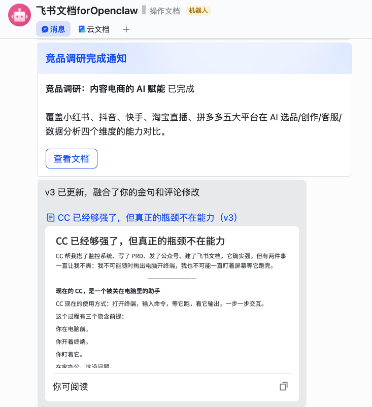
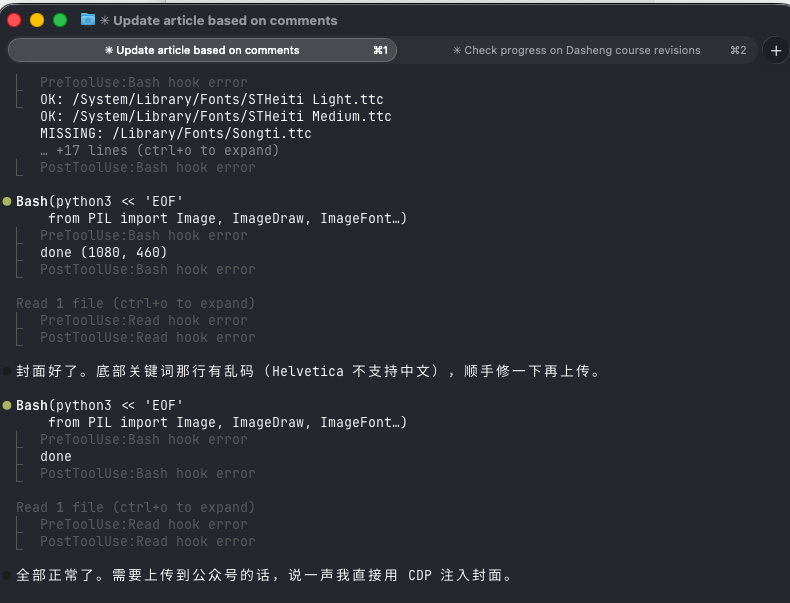
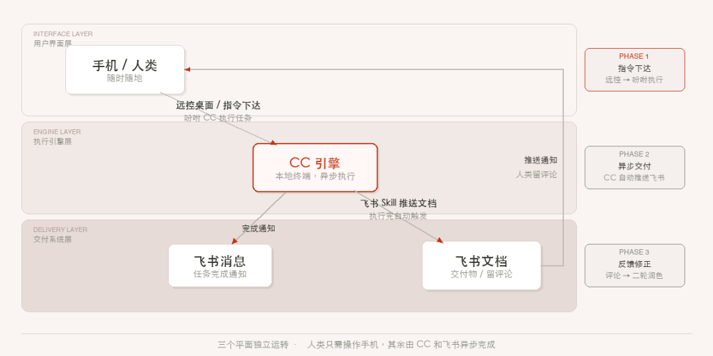

CC 确实强，有两件事让我越来越不爽——想用的时候不在电脑前，在跑的时候又得守着它。这不是功能问题，是还有两道槛需要迈进。
CC 现在的使用方式：打开终端，输入命令，等它跑，看它输出。
第一道门槛，你得在电脑前才能用它；
第二道门槛，跑起来了你还得全程守着电脑终端。
两道槛，两个摩擦。
在家办公，这没问题。
但你在地铁上呢？在会议室里呢？在吃饭的时候突然想到一个需求呢？
这不优雅，也不现实。
这是第一道槛：入口太重。你要用它，必须先走到它面前。
CC 距离真正好用，就差这两步
一、打通第一道槛：未来的终端Agent会让入口便携+无感化
更自然的方式应该是这样的——
你在地铁上，打开微信，发一句：
「帮我查一下今天小红书上千问的舆情，分析完发飞书给我。」
然后锁屏。家里的电脑开始跑。你甚至不需要知道它在用 Claude Code 还是别的什么。
现在已经有人在做这个了。
OpenClaw 这类通信渠道的本质，就是提供一个无感的、随时触达的 Agent 入口。Claude Code 官方在做的 Remote Control 也是这个方向。
但我没有选择官方方案，而是折腾了一套更稳的“土办法”：远程桌面 + 本地常驻 CC 终端。
这意味着我不需要守在电脑前，随时掏出手机就能唤醒我的 CC。
相比于官方远程连接，需要魔法，因为网络波动的的断联只能干着急。
远控桌面虽然在小屏上操作略显局促，但胜在连接极其稳定。
最核心的闭环在于异步交付。 我开发了一个飞书 Skill：CC 执行完任务后，会自动将交付物推送到飞书文档。我的手机收到推送后，直接在飞书 App 里批阅、留评论。
最后，我只需回到远控大屏，连接上 CC，吩咐一句：“根据我刚才在文档里的评论进行润色。”
——比如这篇文章，就是这样“隔空”写出来的。
这种模式下，我避开了所有在终端里的琐碎修改，终端 Agent 彻底变成了一个深藏幕后的“引擎”。

二、第二道槛：终端的交付体验并不是人人都能get到的
现在的 ClaudeCode 还是过于Geek了
看这个交互流程，说是在一堆命令行里找适合人类阅读的文字也不为过
比如下面这张图，直观的说，虽然展示出了24行，但是只有2行是自然语言。

如果让CC在终端里打印出你想要的长文本、图片 —— 那也是不现实的。
1、首先简单的ctrl+C，ctrl+V，在终端里就不生效。
ctrl+C在终端里是结束的意思。。嗯，我第一次用的时候，尝试复制一个东西，嘎嘣，我的进程结束了。
如果你尝试在终端进行文字修改，就会发现也是非常地反人类。
2、另外，大家在一边用ClaudeCode一边干其他事情的时候，会不会觉得总是miss掉Claude的完成提醒？回头一看，发现任务已经结束好久了，又耽误了修改进度。
更进阶的体验应该是这样：CC 在后台异步跑。跑完了，Claude 通过App、短信、铃声、台灯闪动、等等方式，提醒你。
并且，推送的内容别是一个终端进程，他更适合是：
一篇格式化的，可以评论交互的飞书文档
排版好，直接可用，不是给你一坨纯文本
一张填好数据的表格
不是给你原材料，是给你成品
一条飞书消息：搞定了
附上排版好的网页链接/截图，点开即用
终端不是为人类阅读而设计的界面。
现在的 Agent 是我们要去 Pull 结果，未来的 Agent 是主动向我们 Push 产物。
Agent 的价值，目前还缺少人类友好的最后一公里。
三、飞书是 Agent 的操作系统
上面两道槛——入口太重、交付太原始——飞书恰好同时打通了这两点。
很多人在问：飞书能不能打赢微信。这个问题可以先放一放。
微信是极度「用户友好」的产品，极简的设计理念。
但从lark CLI看起来，飞书想做的，是一个「Agent 友好」的产品——两者的目标压根不一样。
在 Agent 时代，微信是聊天工具，飞书是操作系统。
飞书有一个微信完全不具备的优势：它同时是 Agent 的输入口和输出口。
所以当飞书一键部署小龙虾的时候，我还挺兴奋的。但是，飞书的龙虾功能相比本地终端的Agent还是阉割掉太多太多了。
Agent输入口
飞书有 CLI，有 API，生态工具丰富。CC 可以直接操作飞书——发消息、建文档、读表格、查日历。
Agent输出口
飞书有文档、有多维表格、有消息卡片。CC 的产物可以完美嵌入飞书生态——不是给你一坨纯文本，是给你一篇排版好的文档、一张填好数据的表格、一条带按钮的卡片消息。
飞书 = 终端Agent 的最佳宿主。

四、两道槛都打通的明天
所以 CC 的进化会有两条线并行：
第一条线：入口越来越轻。
从终端，到桌面 App，到微信/飞书，到语音一句话。最终你甚至不知道自己在用 CC——你只知道事儿已经办好。
飞书目前只有单向输出CC的产物，我正在尝试打通，让飞书替代掉远程控制电脑的软件。
第二条线：交付越来越好。
从 Markdown，到飞书文档，到格式化可直接使用的内容。
终端Agent不再给你show off coding，给你的是成品。
当这两条线都走到位的时候，Agent 就不再是你坐在电脑前用的工具——
它是你的数字分身
任务结束了，推一条飞书消息到你手机。你醒来打开一看，事情已经办好了。
今天的 CC，就像一个超级聪明但被关在电脑里的助手。你得走到它面前，打开终端，看着它干活。
这个阶段不会持续太久。
入口会变轻，交付会变好，过程会变透明。
工具的终极形态，就是人人都能使用
并且就像长在人身上一样自然
以上，既然看到这里了，如果觉得不错，随手点个赞、在看、转发三连吧，如果想第一时间收到推送，也可以给我个星标～
谢谢你看我的文章，我们，下次再见